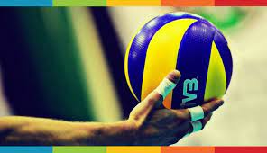
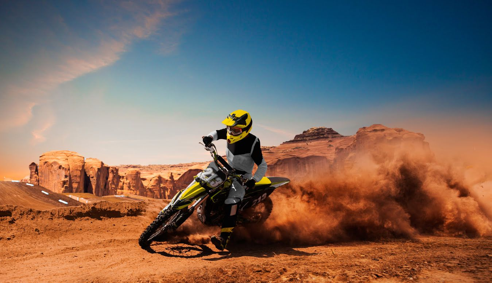

Mi ciudad
Mi familia
Mis amigos
Sobre mí
Mis Hobbies
Mi pasión por la Musica
La música es mi pasión y un vínculo emocional que atraviesa mi vida. Disfruto de géneros diversos,
desde el jazz hasta el rock alternativo, encontrando inspiración y confort en cada nota. La música
me conecta con recuerdos, emociones y otras personas, y es fundamental para mí, llenándome de ritmo,
armonía y significado.
Mi pasión por el Voleibol

El voleibol es mucho más que un simple deporte para mí; es una pasión que me llena de emoción y
energía cada vez que estoy en la cancha. Desde el momento en que golpeo la pelota por primera vez
hasta el instante en que celebro un punto con mi equipo, siento una conexión única con el juego.
Disfruto de la intensidad de cada rally, la estrategia detrás de cada jugada y la camaradería que se
forma entre mis compañeros de equipo. El voleibol no solo me desafía físicamente, sino que también me
enseña lecciones valiosas sobre trabajo en equipo, perseverancia y superación personal. Ya sea en la
arena de la playa o en el gimnasio, el voleibol es una parte esencial de mi vida, llenándome de
alegría y satisfacción con cada golpe y cada bloqueo.
Mi pasión por programar

La programación no es solo una habilidad, es mi pasión. Cada línea de código que escribo me llena de
emoción y creatividad. Disfruto del desafío de resolver problemas y de ver mis aplicaciones en
funcionamiento. La programación me enseña perseverancia y pensamiento crítico, y es una parte esencial
de mi vida, llenándome de orgullo y realización.
Mi pasión por Conducir

Conducir motos y autos va más allá de una simple actividad para mí; es una pasión que me llena de emoción
y libertad en cada viaje. Desde el rugido del motor hasta la sensación del viento en mi rostro, encuentro
una conexión única con la carretera. Disfruto del desafío de dominar las curvas y la velocidad, así como
del placer de explorar nuevos destinos. Conducir me enseña disciplina, paciencia y responsabilidad en cada
kilómetro recorrido. Ya sea en dos ruedas o cuatro, la experiencia de conducir es una parte esencial de mi
vida, llenándome de adrenalina y satisfacción en cada viaje.